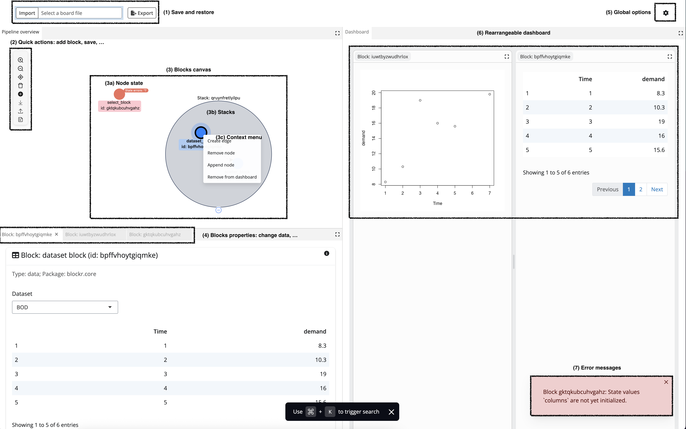

blockr.ui for users
We strived to make it as simple as possible, yet with a totally flexible layout. All panels can be resized and rearranged to your liking.
The user interface

That’s how blockr.ui looks like.
The top navigation bar contains buttons to import or export any existing work you did before.
-
The left pipeline panel has a toolbar which exposes quick actions such as:
- adding a new block.
- Removing a set of selected blocks.
- Saving the current work.
- Restore a previous state.
- Zoom in or out on the network.
- …
In the center of the panel is displayed the current blockr pipeline where blocks are represented as nodes and connections as edges. In our example, we have 1 invalid block which state is depicted as orange. The reason is explained in the bottom right corner of the UI where error messages are displayed (in this specific case, the block is missing input data). Blocks can be grouped together within stacks, as shown with the grey circle. This is convenient as stacks can be collapsed or expanded, thereby saving significant amount of space in the UI. You can also drag and drop nodes in or out of a stack to add/remove them, respectively. Pretty much all elements on the canvas have a right click action, also known as a context menu. For example, right-clicking on a node will show you options to remove it, add another node right after, connect it to another node or add/remove it in the right side dashboard. Right clicking on the canvas will show you options to add a new block or add a new stack. These actions can be customised as explained in the following vignette.
The bottom right corner hosts the properties panels. It displays the properties of the any existing block. They can be closed but reappear if you click on the corresponding node in the graph. You can edit these properties directly in the UI, like changing the currently selected data. In future releases, you will be able to change the block name and more.
You may control global options from the top right corner. This opens a menu where some options can be changed, such as the current theme, the dashboard zoom, …
The right side dashboard is a place to add blocks outputs such as plots, tables or any other output that can be produced by a block. You can add blocks to the dashboard by right-clicking on them and selecting “Add to dashboard” and remove them by right-clicking on the dashboard output and selecting “Remove from dashboard”. The dashboard can be resized and each panel can be dragged to rearrange the layout.
The bottom left corner displays the current pipeline error logs.
blockr.ui for developers
If you are a developer and want to get a better undestanding of how blockr.ui works, this section is for you. We’ll explain how to run an app and how to customize it.
Run an application
To start an app with blockr.ui, you can use:
library(blockr.dplyr)
library(blockr.sdtm)
library(blockr.ai)
library(blockr.io)
library(blockr.ui)
# To customize
Sys.setenv(
"SNAPSHOT_LOCATION" = "<PATH_TO_SNAPSHOT_LOCATION>",
"AUTO_SNAPSHOT" = FALSE
)
run_demo_app()This code can be deployed on any server that supports R and Shiny, such as Shiny Server or RStudio Connect. You may notice that we load each blockr related package to make blocks available to the end user in the app.
You can also spin up a custom app with existing blocks, links and stacks, like so:
library(blockr.ui)
run_demo_app(
blocks = c(
a = new_dataset_block("BOD"),
b = new_dataset_block("ChickWeight"),
c = new_merge_block("Time")
),
links = c(
ac = new_link("a", "c", "x"),
bc = new_link("b", "c", "y")
),
stacks = list(ac = c("a", "c"))
)This feature is convenient to setup demonstrations apps quickly.
Customizing the app
blockr.ui can be customized in various ways. In the following we detail the most common ones.
Anatomy of blockr.ui
blockr.ui is built on top of blockr.core and uses its functionalities to create a Shiny app. At the root, we have a board object which is a collection of blocks, links and stacks. The board is created using blockr.core::new_board().
flowchart TD
subgraph board[Board]
subgraph stack1[Stack 1]
direction TB
blk_1[Block 1]
blk_2[Block 2]
blk_1 --> |link| blk_2
end
end
In blockr.ui, we designed a custom board, namely a dag_board object via new_dag_board().
This allows us to create a custom UI with board_ui.dag_board with a totally different flavor as in the blockr.core version. Below is a summary of the UI components:
tagList(
off_canvas(
id = paste0(id, "-offcanvas"),
title = "Board",
blocks
),
board_header(id, my_board_ui),
dockViewOutput(
paste0(id, "-layout"),
width = "100%",
height = "100vh"
),
scoutbar(
sprintf("%s-scoutbar", id),
placeholder = "What do you want to do?",
showRecentSearch = TRUE
)
)On the server side, we have a board_server.dag_board function which handles the server logic for the board:
board_server(
"board",
board,
plugins = plugins,
callbacks = c(
lapply(modules, board_module_server),
list(
# Callback to signal other modules that the restore is done.
# This allows to restore each part in the correct order.
on_board_restore = board_restore,
manage_scoutbar = manage_scoutbar,
layout = build_layout(modules, plugins)
)
),
parent = app_state
)This function works on the board object as well as other elements. callbacks are functions or Shiny modules that are injected in the same namespace as the board server. Unlike callbacks, plugins are submodules of the board, so the namespace is prefixed by the board namespace. Plugins and modules are detailed below. Finally, the parent argument is used to pass the app state object which is used to store the current state of the app and communicate between modules and plugins. We have a specific state method for the dag_board class (see create_app_state()) but you could design your own state object, which would however require to also modify plugins and modules to ensure consistency.
flowchart TD
modules[Modules]
board_obj[Board object]
modules --> board_obj
board_obj --> |serve.dag_board| app
subgraph app[App]
plugins[Plugins]
plugins --> main
subgraph main[Main module]
app_state[App state]
subgraph board[Board module]
direction LR
subgraph board_callbacks[Board callbacks]
direction TB
board_restore[Restore]
manage_scoutbar[Scoutbar management]
layout[Layout management]
end
subgraph board_modules[Board modules]
subgraph dashboard_module[Dashboard module]
end
end
subgraph board_plugins[Board plugins]
direction LR
manage_blocks[Manage blocks plugin]
manage_links[Manage links plugin]
manage_stacks[Manage stacks plugin]
generate_code[Generate code plugin]
notify_user[Notify user plugin]
end
end
board_modules <-.-> |update| app_state
board_callbacks <-.-> |update| app_state
board_plugins <-.-> |update| app_state
end
end
Pass custom modules
Under the hoods, run_demo_app() serves a dag_board object which is created via new_dag_board():
my_board <- new_dag_board(
blocks = c(
a = new_dataset_block("BOD"),
b = new_dataset_block("ChickWeight"),
c = new_merge_block("Time")
),
links = c(
ac = new_link("a", "c", "x"),
bc = new_link("b", "c", "y")
),
stacks = list(ac = c("a", "c")),
modules = list(
new_dashboard_module()
)
)
my_board
#> <dag_board<board>>
#>
#> Blocks[3]:
#>
#> a<dataset_block<data_block<block>>>
#> Name: "Dataset block"
#> No data inputs
#> Initial block state:
#> $ dataset: chr "BOD"
#> $ package: chr "datasets"
#> Constructor: blockr.core::new_dataset_block()
#>
#> b<dataset_block<data_block<block>>>
#> Name: "Dataset block"
#> No data inputs
#> Initial block state:
#> $ dataset: chr "ChickWeight"
#> $ package: chr "datasets"
#> Constructor: blockr.core::new_dataset_block()
#>
#> c<merge_block<transform_block<block>>>
#> Name: "Merge block"
#> Data inputs: "x" and "y"
#> Initial block state:
#> $ by : chr "Time"
#> $ all_x: logi FALSE
#> $ all_y: logi FALSE
#> Constructor: blockr.core::new_merge_block()
#>
#> Links[2]:
#>
#> ac: a -> c (x)
#> bc: b -> c (y)
#>
#> Stacks[1]:
#>
#> ac<stack[2]>
#> Name: "Stack 1"
#> Blocks: "a" and "c"
#>
#> Options:
#> $ board_name : chr "Board"
#> $ n_rows : int 50
#> $ page_size : int 5
#> $ filter_rows : logi FALSE
#> $ dark_mode : chr "light"
#> $ thematic : NULL
#> $ stacks_colors : chr [1:40] "#A71B4B" "#B32A49" "#BF3645" "#CA433E" ...
#> $ dashboard_zoom: num 1
#> $ snapshot :List of 2
#> ..$ location: chr "/tmp/RtmpDPsyHE"
#> ..$ auto : logi FALSEWe use the ... to pass blocks, links and stacks to the board. The modules argument is used to attach one or several modules to the board. In this case, we use new_dashboard_module() to attach the default dashboard module. We dedicated an entire article to explain how to create custom modules.
Manage plugins
As discussed in the blockr.core plugins vignette, plugins are Shiny modules used to customize/enhance UX aspects of the board module.
To control which plugin to use in the app, you can use the blockr.core::plugins(), like so:
my_plugins <- plugins(
preserve_board(server = ser_deser_server, ui = ser_deser_ui),
manage_blocks(server = add_rm_block_server, ui = add_rm_block_ui),
manage_links(
server = gen_add_rm_link_server(ctx_menu_items),
ui = add_rm_link_ui
),
manage_stacks(server = add_rm_stack_server, ui = add_rm_stack_ui),
generate_code(server = generate_code_server, ui = generate_code_ui),
notify_user()
)
my_plugins
#> <plugins[6]>
#> preserve_board: <preserve_board<plugin>>
#> manage_blocks: <manage_blocks<plugin>>
#> manage_links: <manage_links<plugin>>
#> manage_stacks: <manage_stacks<plugin>>
#> generate_code: <generate_code<plugin>>
#> notify_user: <notify_user<plugin>>blockr.ui improves few of the core modules such as the gen_add_rm_link_server() and add_rm_link_ui() which is responsible for managing node and edges and connections with the g6R package. Blocks management is done via the add_rm_block_server() and add_rm_block_ui() modules, which are powered by the scoutbaR package. The latter provides a significantly better user experience with a powerful search bar with autocompletion and history management.
Then you can pass any extra plugin you developed as long as they belong to the one handled by block.core. The full list of available plugins can be found by running board_plugins(). You’ll notice that blockr.ui does not yet use edit_block or edit_block plugins.